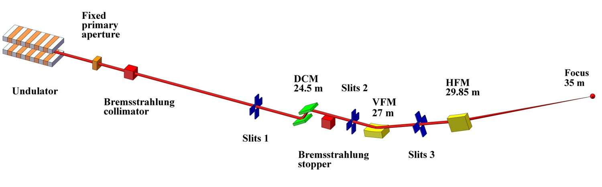
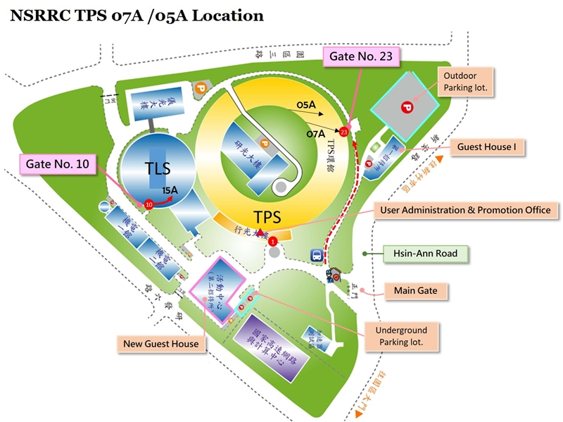

The X-ray source of TPS 05A is a three meters long in-vacuum undulator (IU22), producing a high-brilliant X-ray beam. The X-rays are monochromated by a liquid-nitrogen-cooling Si double-crystal monochromator, and focused by a pair of Kirkpatrick–Baez mirrors. The focused beam size at the sample is 65 μm (H) x 36 μm (V) with photon flux of 1.1 ×1013 photons/s at 12.4 keV. Apertures are used to collimate the beam in the range of 200–10 μm. The beam divergence at the sample is less than 500 μrad (H) and 100 μrad (V), and the energy range is from 5.7 to 20 keV (wavelength 2.175-0.62 Å). Equipped with photon-counting pixel area detector (EIGER2 X 9M) and a micro-diffractometer, TPS 05A is capable of not only shutterless data collection for much higher throughput and helical scan to mitigate the radiation damage but also grid scan to find the best diffraction areas or to locate micro crystals. The optional mini-κ goniometer of the high precision micro-diffractometer enables crystal reorientation. A robotic sample changer (ISARA) for automatically sample mounting and centering in installed, making the data acquisition more efficient. Substantial user-support, automatic data process, ligand search and remote access are also provided.
- Chung-Kuang Chou, et al., The current status and future prospects of the Synchrotron Radiation Protein Crystallography Core Facility at NSRRC: a focus on the TPS 05A, TPS 07A and TLS 15A1 beamlines. J. Synchrotron Rad. 2025, 32(2), 457. [doi: 10.1107/S1600577525000177]
| Beam Size (µm) | Defined Flux (photons/sec) | Flux Density (photons/sec/µm2) | Time to 10 MGy (sec) |
|---|---|---|---|
| 200 | 5.7×1012 | 3.37×108 | 60 |
| 100 | 1.7×1012 | 5.09×108 | 40 |
| 50 | 4.4×1011 | 5.47×108 | 36 |
| 10 | 4.0×1010 | 8.33×108 | 24 |
- TPS 05A - Micro-beam Data Collection and Processing Methods_Chinese
- TPS 05A - Micro-beam Data Collection and Processing Methods_English
- Tutorial of Data Processing by XDS and KAMO_Chinese
- Tutorial of Data Processing by XDS and KAMO_English
- Tutorial of Data Processing by HKL2000_Chinese
- Tutorial of Data Processing by HKL2000_English

TPS 05A Micro-focus Protein Crystallography Beamline is located at the 5th port of the TPS storage ring. The nearest entrance to this beamline is the NSRRC Gate No.23. Upon entering from the NSRRC Hsin-Ann Road main gate, make the first right turn at the first intersection and proceed approximately 100 meters. After entering through Gate No. 23, the beamline on the right-hand side is TPS 07A, and TPS 05A is located next to TPS 07A. After passing through TPS 07A, please proceed straight ahead for approximately 20 meters to reach it. The nearest parking lot to Gate No. 23 is located adjacent to the First Guest house.
